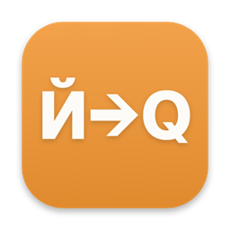

Исправляет на ходу
С четвёртой буквы, ещё до пробела. Дальше вы печатаете уже в нужной раскладке.

приложение для MacQwerty Switcher сам переводит слово, набранное не в той раскладке.
Пример: начало слова «ghbd», набранное в английской раскладке, превращается в «прив», и фраза продолжается по-русски: «привет, как дела?»
Одна клавиша, две буквы. Приложение понимает, какую из них вы имели в виду.
Слово взвешивается по словарю на 697 тысяч слов, частоте и соседним буквам. Поэтому чинятся и слова, которых в словаре нет.
С четвёртой буквы, ещё до пробела. Дальше вы печатаете уже в нужной раскладке.
Выделите текст и дважды нажмите Shift: весь фрагмент перейдёт в другую раскладку. Без выделения переведётся последнее слово.
Латинские команды в терминале остаются как есть: приложение смотрит на язык соседнего текста.
Дважды поправили слово вручную, дальше оно исправляется само. Словарь правок хранится только на вашем Mac.
Распознаёт игру и не трогает клавиши. Когда вы снова пишете текст, режим снимается сам.
Для отдельных приложений автоисправление можно выключить, а целиком поставить на паузу на 15, 60 или 120 минут.
~ % lsof -a -i -p $(pgrep -x QwertySwitcher)
~ % Откройте DMG и перенесите Qwerty Switcher в папку «Программы».
Сборка подписана самоподписанным сертификатом, и macOS предупредит. На macOS 15 и новее: Системные настройки, Конфиденциальность и безопасность, «Открыть всё равно». На 13 и 14: правый клик, «Открыть».
Приложение само откроет нужный раздел настроек. Без этого разрешения оно не видит нажатий. Перезапускать ничего не нужно.
Да. Исправление печатается по одному символу, поэтому доходит и до приложений на Electron, где пачки нажатий теряются. В терминалах латинские команды не трогаются.
Русскую и английскую раскладки: словарь на 697 тысяч слов, частоты слов и сочетания букв для обоих языков.
Включите проверку и автоустановку в настройках. Раз в сутки приложение запросит один файл с этого сайта, и права доступа после обновления сохранятся. Если ставить новую версию из DMG поверх старой, macOS попросит разрешения заново.
Без подписки, ключей и пробного периода. Исходный код открыт на GitHub под лицензией MIT.
Нажмите ⌘⌥Z, и слово вернётся как было. Дважды поправленное вручную слово приложение запомнит.